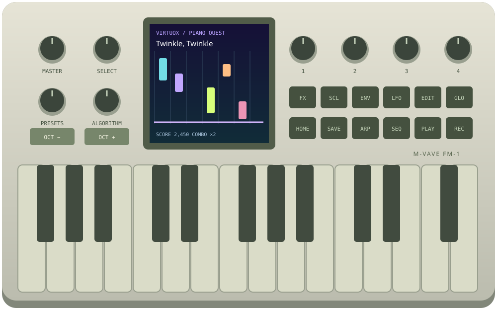

Switch on the demo.
Open VirtuoX and click Switch on to start audio. Play the on-screen keys or use your computer keyboard.
Open the instrument ↗Turn every note into progress. Learn piano, understand the music, and make your own sounds—with the familiar controls of the M-VAVE FM-1.
Free, open source, and playable without hardware. The working demo is a browser application; a flashable VirtuoX firmware build is not available yet.

No FM-1? No problem. The browser instrument includes the panel, keyboard, color LCD, synthesis, lessons and sound controls.
Open VirtuoX and click Switch on to start audio. Play the on-screen keys or use your computer keyboard.
Open the instrument ↗In Chrome or Edge, choose Connect MIDI and select your USB MIDI keyboard. Wider and two-hand lessons work best with a full-size keyboard.
MIDI setup guide ↗Use Piano Coach for guided practice or DX7-Compatible Player for free play, sound design, effects, arpeggios and sequencing.
Explore both modes ↓A lesson when you want direction. An instrument when you want to explore. Switch between them from GLO or the browser mode tabs.
Colorful falling notes connect what you see to what you play. Learn at your own pace, then challenge your timing as your confidence grows.
The graphic is a motion illustration. The playable demo uses actual MIDI and keyboard input to score performances.
GLO → Learning lets you choose any combination of six subjects. Short explanations connect concepts to playable exercises; your mix shapes the automatic practice path.
Twinkle, Twinkle, Ode to Joy, Für Elise and Minuet excerpts, plus two-hand studies and original grooves.
Note names, accidentals, intervals, scale degrees, chord construction, inversions and harmony.
All 12 major and natural-minor keys, plus chromatic, pentatonic, blues and harmonic-minor studies.
Triads, inversions, arpeggios, seventh chords, suspended chords, diminished chords and progressions.
Steady pulse, subdivisions, note values, rests and progressively more demanding timing patterns.
Five-finger patterns, thumb-under coordination, dynamics, legato, staccato and hand independence.
Explore six-operator DX7-compatible FM synthesis, or switch to six analog-inspired sounds with their own filter and modulation controls.
Original M-VAVE V15 factory names and order, adapted for this browser engine. Each bank is one click away; PRESETS selects the sound.
Import single voices or 32-voice Yamaha-format SysEx banks. Audition, favorite, edit and export them. Imported patches stay in your browser where storage allows.
The public repository does not bundle the personal Yamaha ROM/Dexed collection. The same source can support your own local library without publishing those files.
Analog-inspired sounds are separate from DX7 files. They cannot be exported or sent to hardware as DX7 voices.
Patch import, export and bank guide ↗Source: M-VAVE’s Apache-2.0 V15 factory bank. The untouched VMEM and its verified SHA-256 are retained in the repository. Twelve out-of-range parameters have documented compatibility adjustments in the browser copy. This is not a bit-identical emulation of the FM-1’s analog output.
Use the four top-right knobs to edit the page you are on. Labels and values are mirrored below the instrument, so you can see exactly what changes.
ENV maps Attack, Decay, Sustain and Release to the four knobs. LFO edits speed, depth and waveform; analog sounds can modulate pitch, filter or both.
FM brightness, feedback, carrier detune, algorithm and six operator pages. Analog-inspired oscillators, cutoff, resonance, filter envelope, drive, sub oscillator and glide.
Chorus, delay, reverb, filtering and drive are implemented with Web Audio. Dedicated pages expose mix, time, feedback, tone and related controls.
Build polyphonic 16-, 32- or 64-step sequences. Capture chords, set gate and swing, record a performance, or turn your sequence into a coach exercise.
Hold a chord and choose Up, Down, Up/Down or Random. Set the note rate and spread the pattern over one to three octaves.
Import standard MIDI format 0/1 or lesson JSON. Choose a hand and bar range. Song tempo changes are flattened to your chosen practice BPM.
The browser panel follows the FM-1 control geometry: 27 keys, a 240 × 240 color LCD, eight rotaries including four context knobs, and fourteen buttons.
| CONTROL | PIANO COACH | DX7-COMPATIBLE PLAYER / SOUND DESIGN |
|---|---|---|
| HOME / SELECT | Browse exercises and pages; return to practice. | Return to performance macros; navigate menu pages. |
| PRESETS | Change sound from any menu; audition while coaching pauses. | Browse sound neighbors; bank/slot are shown. List hides after five idle seconds. |
| KNOBS 1–4 | Edit four labeled settings on the current screen. | Edit macros, ENV, LFO, FX, operators or sequence controls. |
| GLO | Profiles, visuals, practice flow, challenge, loops and Learning mix. | Instrument mode, master volume, tempo and MIDI input channel. |
| ENV / LFO / FX / EDIT | Envelope, modulation, effects and synthesis pages for the current sound. | |
| PLAY / REC / SEQ | Start a course, listen with HOME + PLAY, or capture playing. | Build and run sequences; record a performance. |
| ARP / SCL | Generate arpeggio and scale exercises. | ARP becomes a held-note arpeggiator; SCL remains a scale reference workshop. |
| SAVE / OCT − + | Save browser settings and progress; shift the on-screen keyboard octave. | |
VirtuoX’s learning system currently runs in the browser. Porting it to native FM-1 firmware requires a separate C implementation and testing on the instrument.
Understand official firmware prerequisites, find the manufacturer’s downloads, choose an existing firmware file for a local SHA-256 check and open the appropriate upstream workbench.
Open firmware center ↗A physical learning instrument with the same mode choices, musical curriculum and expressive LCD. A tested native build and hardware release procedure must come before an Install VirtuoX button.
Follow development on GitHub ↗200 original arranged tracks: 25 each for M Dean inspired, Jarre inspired, Moog fundamentals, Drayk, Dr Dray, Bach-style, Mozart-style and Classical learning. Twelve complete licensed Bach and Mozart MIDI editions remain available separately. Practice with bass, lead, pluck and pad sounds.
Open the style library in Piano coach ↗ Drayk / late-night keys ↗ Dr Dray / West Coast funk ↗ Compare open-source FM-1 firmware ↗No release date is promised. Browser feature tests do not establish hardware safety or real-time firmware performance.
No. The demo runs in your browser. Play with the mouse, touch or computer keyboard, or connect an external MIDI keyboard. Wider two-hand studies benefit from an external keyboard.
No. This release is the working browser prototype and its open source. Native FM-1 teaching firmware is a development target. The firmware center explains recovery and links to existing upstream tools; it does not flash VirtuoX.
Yes. Choose DX7-Compatible Player. Lessons and scores disappear. Play freely, change banks, edit the sound, use effects, run the arpeggiator or build a sequence.
The original M-VAVE FM-1 V15 factory collection, 128 voices in four banks, with documented browser compatibility adjustments. You can import your own DX7 .syx files locally. Personal Yamaha ROM/Dexed banks are not bundled in this public repository.
Yes. GLO Learning combines songs, theory, scales, chords, rhythm and technique in any nonempty mix. Concept cards explain the task before playing. Listening and singing suggestions are included, but singing and ear-recognition answers are not assessed.
Every required key must be held together before the chord earns points. Timed mode checks each onset and the spread between chord tones. Wait mode advances after a complete chord and explicitly does not grade onset timing.
The app handles MIDI, synthesis, patch imports and practice progress in the browser. It has no application backend for uploading your playing. Export anything important: browser storage can be cleared or become full.
No. VirtuoX is an independent project by telespial. Panel source attribution is retained in the license notices; synthesis uses the Apache-2.0 MSFA engine. M-VAVE factory sound data retains its separate terms. See the source and credits.
VirtuoX is an independent project by Richard Haberkern / telespial. Explore the source, report a reproducible issue, or help bring a better learning instrument to the M-VAVE FM-1.